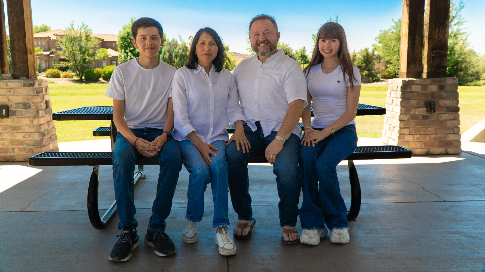
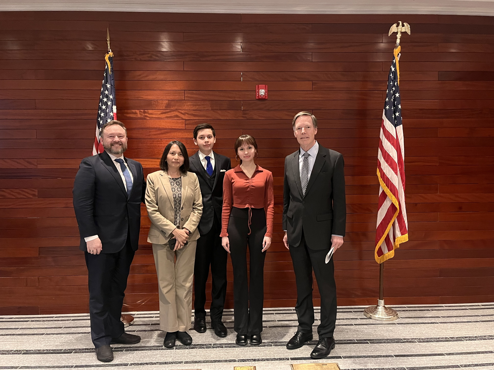

I am a pre-business strategic management major at Brigham Young University. I have a passion for international business and consulting, and I am eager to gain experience in these fields. I have worked as a protocol intern at the U.S. Embassy in Beijing, where I learned about diplomatic relations and event planning. I also have experience in marketing and management through my roles at the Creamery on Ninth and UNIT-E Magazine.
In my free time, I enjoy reading, traveling, and exploring new cultures. I am also passionate about sustainability and have founded a garden and composting club at my school. I believe in the importance of giving back to the community and have volunteered for various organizations.
I am excited to continue my education and gain more experience in the business world. I am looking forward to connecting with other professionals and learning from their experiences.
This paragraph is for demonstration purposes.
This paragraph is for demonstration purposes.
This paragraph is for demonstration purposes.
 